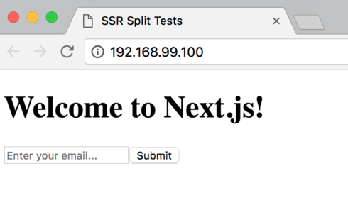

[GDD] The Production Stack - stack.yml (Part 2 of 2) 05 December 2018
The only thing left to do now that we have our local continuous delivery pipeline flowing is to deploy it to our local Docker Swarm.
After that we’ll be ready to start exploring moving it to AWS.
A couple of weeks ago on one of the first couple days, we actually came closest to make a production ready stack for this project.
I saved that original file in the repository as `docker-
compose.prod.yml`.
The major difference is that it uses the image we built rather than the development config in `docker-compose.yml`
Let’s rename `docker-compose.prod.yml` to `stack.yml` and make some modifications:
version: '3.4'
networks:
proxy:
external: true
services:
split-test:
image: patrickleet/split-test:${VERSION}
environment:
NODE_ENV: production
networks:
- proxy
deploy:
placement:
constraints:
- node.role == worker
labels:
- com.df.notify=true
- com.df.servicePath=/
- com.df.port=3000
The only new thing we are seeing here is the addition of deployment labels. Docker Flow Swarm Listener will be notified of this container's events because of the label `com.df.notify=true` and they are in the same network.
In turn, Docker Flow Proxy will be configured using the rest of the `com.df` options. `servicePath` is where the service will be reachable, and `port` is the port that the proxy will forward requests to.
We should be able to deploy this along with our proxy.
Let’s start up our Docker Swarm Cluster and try it out.
cd scripts
git pull origin master
sh docker-swarm-restart-small.sh
eval $(docker-machine env node-1)
cd ../split-test
# set up the network and proxy
docker network create --driver=overlay proxy
docker stack deploy -c proxy.yml proxy
# deploy
VERSION=1.0 docker stack deploy -c stack.yml split-test
➜ docker stack ps split-test
ID NAME IMAGE NODE DESIRED STATE CURRENT STATE ERROR PORTS
auy2pksrgq4g split-test_split-test.1 patrickleet/split-test:1.0 node-2 Running Starting less than a second ago
jglh2qpebhou \_ split-test_split-test.1 patrickleet/split-test:1.0 node-2 Shutdown Shutdown less than a second ago
iyugvd395o2w \_ split-test_split-test.1 patrickleet/split-test:1.0 node-2 Shutdown Complete 10 seconds ago
g8eygvx0wiqq \_ split-test_split-test.1 patrickleet/split-test:1.0 node-2 Shutdown Complete 48 seconds ago
qboeuzxf8eze \_ split-test_split-test.1 patrickleet/split-test:1.0 node-2 Shutdown Complete about a minute ago
Uh oh! Something has gone wrong!!
Let's check the logs... Our application seems to start up but then it restarts.
➜ docker service logs qboeuzxf8eze
split-test_split-test.1.qboeuzxf8eze@node-2 |
split-test_split-test.1.qboeuzxf8eze@node-2 | > split-test-tutorial@1.0.0 start /usr/src/service
split-test_split-test.1.qboeuzxf8eze@node-2 | > next start
split-test_split-test.1.qboeuzxf8eze@node-2 |
split-test_split-test.1.qboeuzxf8eze@node-2 | > Ready on http://localhost:3000
The logs indicate the service started, so why would it restart?
Until now, healthchecks have not mattered. docker-compose did not care about the health of our container.
Docker Swarm does care though.
Because the status is never reported as healthy, docker swarm attempts to restart the container to resolve the issue.
To fix the healthcheck, we simply need to remove the path /_health which does not exist in our application, changing our application to report healthy or not based on the root url.
See this fix here: https://github.com/patrickleet/split-test-tutorial/commit/83cf0bc4ab238d1561415c1792db0534bbc6cde2#diff-3254677a7917c6c01f55212f86c57fbfL36
Now let's rerun our CI process, and deploy our stack.
export VERSION=1.1
make ci
docker stack deploy -c stack.yml split-test
This time we get the output "Updating service split-test_split-test (id: tki1o5p7xz3whl2u08x9ovn0a)" instead of creating like before.
After waiting a few moments, running `docker-stack ps split-test` shows our container is running successfully this time.
Let’s open it up:
open "http://$(docker-machine ip node-1)"

Yay! Our split test app running on Docker Swarm and exposed through our Proxy!
If there were not virtual machines, but machines on AWS, you’d have successfully deployed your app. There are a few more hoops on that end though, such as setting up firewall rules appropriately.
The next and final portion of the class will focus on getting this application running on a Docker Swarm for production on AWS.
Excited?
I hope so!
See you next time!
Patrick-Scott.yml